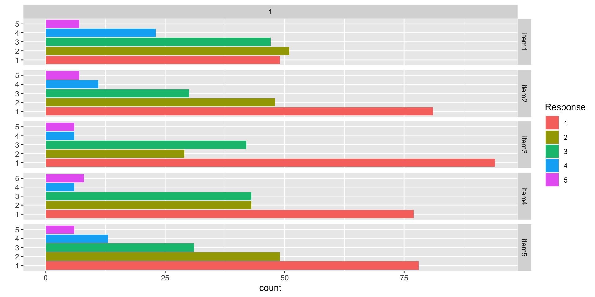
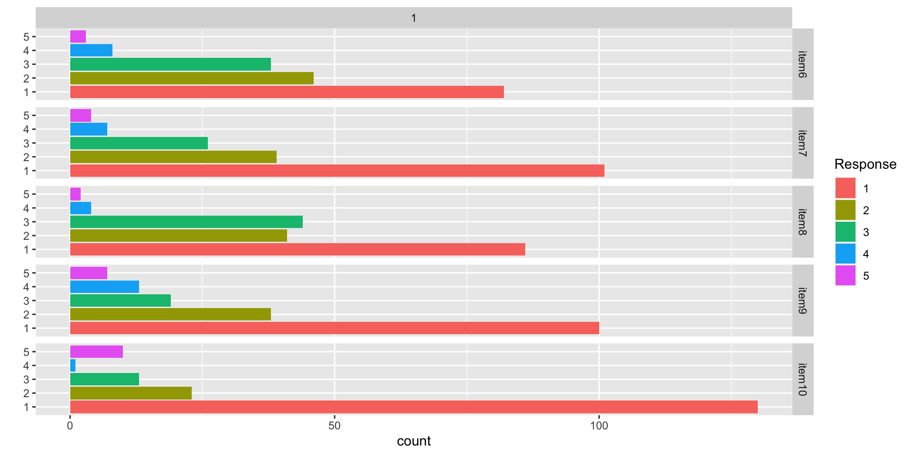

Generalized Measurement Models: An Introduction
Lecture 4a
Today’s Lecture Objectives
- Introduce measurement (psychometric) models in general
- Describe the steps needed in a psychometric model analysis
- Dive deeper into the observed-variables modeling aspect
Example Data: Conspiracy Theories
Today’s example is from a bootstrap resample of 177 undergraduate students at a large state university in the Midwest. The survey was a measure of 10 questions about their beliefs in various conspiracy theories that were being passed around the internet in the early 2010s. Additionally, gender was included in the survey. All items responses were on a 5- point Likert scale with:
- Strongly Disagree
- Disagree
- Neither Agree or Disagree
- Agree
- Strongly Agree
Please note, the purpose of this survey was to study individual beliefs regarding conspiracies. The questions can provoke some strong emotions given the world we live in currently. All questions were approved by university IRB prior to their use.
Our purpose in using this instrument is to provide a context that we all may find relevant as many of these conspiracy theories are still prevalent today.
Conspiracy Theory Questions 1-5
Questions:
- The U.S. invasion of Iraq was not part of a campaign to fight terrorism, but was driven by oil companies and Jews in the U.S. and Israel.
- Certain U.S. government officials planned the attacks of September 11, 2001 because they wanted the United States to go to war in the Middle East.
- President Barack Obama was not really born in the United States and does not have an authentic Hawaiian birth certificate.
- The current financial crisis was secretly orchestrated by a small group of Wall Street bankers to extend the power of the Federal Reserve and further their control of the world’s economy.
- Vapor trails left by aircraft are actually chemical agents deliberately sprayed in a clandestine program directed by government officials.
Conspiracy Theory Questions 6-10
Questions:
- Billionaire George Soros is behind a hidden plot to destabilize the American government, take control of the media, and put the world under his control.
- The U.S. government is mandating the switch to compact fluorescent light bulbs because such lights make people more obedient and easier to control.
- Government officials are covertly Building a 12-lane "NAFTA superhighway" that runs from Mexico to Canada through America’s heartland.
- Government officials purposely developed and spread drugs like crack-cocaine and diseases like AIDS in order to destroy the African American community.
- God sent Hurricane Katrina to punish America for its sins.
Data Visualization: Q1-Q5

Data Visualization: Q6-Q10

Building Measurement Models
Measurement Model Analysis Steps
- Specify model
- Specify scale identification method for latent variables
- Estimate model
- Examine model-data fit
- Iterate between steps 1-4 until adequate fit is achieved
Measurement Model Auxiliary Components
- Score estimation (and secondary analyses with scores)
- Item evaluation
- Scale construction
- Equating
- Measurement invariance/differential item functioning
Model Specification
Recall our lecture on measurement models where we tried to describe the model itself.
One way of doing this was through a path model:
Building a Measurement Model
The path model on the previous slide showed:
- One latent variable (\(\theta\))
- Five observed variables (\(Y_1\), \(Y_2\), \(Y_3\), \(Y_4\), \(Y_5\))
Each line (edge) of the path diagram implies a relationship that becomes (for one observed variable):
Building a Measurement Model
The Theory Side:
- Latent variable(s)
- Other effects as needed by a model
- Random effects (a type of latent variable)
- Testlet effects (a type of latent variable)
- Other observed variables (e.g., DIF/Measurement Invariance)
The Data Side:
- Outcomes (more specifically, a function applied to one or more statistics of the outcome)
- An assumed distribution for each outcome
- A key statistic of the outcome for the model (the mean, typically)
- A link function
Example
An example for one outcome and one latent variable:
\[
f(E\left(Y_{pi} \mid \theta_p\right) ) = \mu_i + \lambda_i \theta_p
\]
The right-hand side (for the latent variables) is fairly standard across models
- The “theory” in my wording
- In this class, all latent variables will be continuous
The left-hand side will differ by:
- The “data” in my wording
- Types of observed data
- Additional assumptions (e.g., parameter constraints)
The Latent Variables
Latent variables are built by specification:
- What is their distribution? (nearly all are normally distributed)
- How do you specify their scale: mean and standard deviation? (step two in our model analysis steps)
You create latent variables by specifying which items measure which latent variables in an analysis model
- Called different names by different fields:
- Alignment (educational measurement)
- Factor pattern matrix (factor analysis)
- Q-matrix (Question matrix; diagnostic models and multidimensional IRT)
Alignment Task for Class
From the 10 items in our conspiracy theory example, please try to answer the following questions:
- How many latent dimensions underlie these items?
- Which items do you believe measure each dimension?
Note, this task should typically occur prior to writing items
- Decide what you are measuring first
- Then create items to measure each dimension
If an item measures a dimension, put a 1 in the column of the dimension:
Government NonGovernment
item1 0 0
item2 0 0
item3 0 0
item4 0 0
item5 0 0
item6 0 0
item7 0 0
item8 0 0
item9 0 0
item10 0 0
From Q-matrix to Model
The alignment provides a specification of which latent variables are measured by which items
- Sometimes we say items “load onto” factors
The mathematical definition of either of these terms is simply whether or not a latent variable appears as a predictor for an item
- For instance, item one appears to measure government conspiracies, meaning its alignment (row vector of the Q-matrix) would be:
Government NonGovernment
1 0
The model for the first item is then built with only the factors measured by the item as being present:
\[
f(E\left(Y_{p1} \mid \boldsymbol{\theta}_p\right) ) = \mu_1 + \lambda_{11} \theta_{p1}
\]
From Q-matrix to Model
The model for the first item is then built with only the factors measured by the item as being present:
\[
f(E\left(Y_{p1} \mid \boldsymbol{\theta}_p\right) ) = \mu_1 + \lambda_{11} \theta_{p1}
\]
Where:
- \(\mu_1\) is the item intercept
- \(\lambda_{11}\) is the factor loading for item 1 (the first subscript) for factor 1 (the second subscript)
- \(\theta_{p1}\) is the value of the latent variable for person \(p\) and factor 1
The second factor is not included in the model for the item.
More Q-matrix Stuff
We could show the model with the Q-matrix entries:
\[
f(E\left(Y_{p1} \mid \boldsymbol{\theta}_p\right) ) = \mu_1 + q_{11}\left( \lambda_{11} \theta_{p1} \right) + q_{12}\left( \lambda_{12} \theta_{p2} \right) = \mu_1 + \boldsymbol{\lambda}_{1}^T \text{diag}\left(\boldsymbol{q}_i \right) \boldsymbol{\theta}_p
\]
Where:
\[
\boldsymbol{\lambda}_{1} = \left[
\begin{array}{cc}
\lambda_{11} & \lambda_{12}
\end{array}
\right]^T
\]
\[
\text{diag}\left(\boldsymbol{q}_i \right) = \boldsymbol{q}_i \left[
\begin{array}{cc}
1 & 0 \\
0 & 1
\end{array}
\right] = \left[
\begin{array}{cc}
1 & 0 \\
\end{array}
\right]
\left[
\begin{array}{cc}
1 & 0 \\
0 & 1
\end{array}
\right] = \left[
\begin{array}{cc}
1 & 0 \\
0 & 0
\end{array}
\right]
\]
\[
\boldsymbol{\theta}_p =
\left[
\begin{array}{cc}
\theta_{p1} & \theta_{p2} \\
\end{array}
\right]
\]
The Q-matrix functions like a partial version of the model (predictor) matrix that we saw in linear models
Multiple Item Models
Each item has its own model
\[
\begin{array}{c}
f(E\left(Y_{p1} \mid \boldsymbol{\theta}_p\right) ) = \mu_1 + \lambda_{11} \theta_{p1} \\
f(E\left(Y_{p2} \mid \boldsymbol{\theta}_p\right) ) = \mu_2 + \lambda_{21} \theta_{p1} \\
f(E\left(Y_{p3} \mid \boldsymbol{\theta}_p\right) ) = \mu_3 + \lambda_{32} \theta_{p2} \\
f(E\left(Y_{p4} \mid \boldsymbol{\theta}_p\right) ) = \mu_4 + \lambda_{42} \theta_{p2} \\
f(E\left(Y_{p5} \mid \boldsymbol{\theta}_p\right) ) = \mu_5 + \lambda_{51} \theta_{p1} \\
f(E\left(Y_{p6} \mid \boldsymbol{\theta}_p\right) ) = \mu_6 + \lambda_{62} \theta_{p2} \\
f(E\left(Y_{p7} \mid \boldsymbol{\theta}_p\right) ) = \mu_7 + \lambda_{71} \theta_{p1} \\
f(E\left(Y_{p8} \mid \boldsymbol{\theta}_p\right) ) = \mu_8 + \lambda_{81} \theta_{p1} \\
f(E\left(Y_{p9} \mid \boldsymbol{\theta}_p\right) ) = \mu_9 + \lambda_{91} \theta_{p1} \\
f(E\left(Y_{p10} \mid \boldsymbol{\theta}_p\right) ) = \mu_10 + \lambda_{10,2} \theta_{p2} \\
\end{array}
\]
Latent Variable Distributions
After building the Q-matrix, we next need to specify the distribution for each latent variable in the model
Most commonly, a normal distribution is used for each latent variable
- Model families with normally distributed latent variables:
- Confirmatory factor analysis
- Item response theory
- Unfolding models
The distribution of the latent variables is the same as specifying a Bayesian prior distribution for the latent variables
If a set of latent variables is multivariate normal, then each is univariate normal
More on Latent Variable Distributions
In general, any distribution can be used. In practice, few are chosen
- Not many non-normal distributions have been shown to be useful
- Care is needed as non-normal distributions can impose odd constraints that may cause bias in other parameters
- Two cases of non-normal distributions that have most prevalence:
- Bernoulli (or Multivariate Bernoulli) in diagnostic models
- Multinomial (or categorical) in finite mixture models
Our Example: Multivariate Normal Distribution
For our example, we will assume the set of traits follows a multivariate normal distribution
\[
f\left(\boldsymbol{\theta}_p \right) = \left(2 \pi \right)^{-\frac{D}{2}} \det\left(\boldsymbol{\Sigma}_\theta \right)^{-\frac{1}{2}}\exp\left[-\frac{1}{2}\left(\boldsymbol{\theta}_p - \boldsymbol{\mu}_\theta \right)^T\boldsymbol{\Sigma}_\theta^{-1}\left(\boldsymbol{\theta}_p - \boldsymbol{\mu}_\theta \right) \right]
\]
Where:
- \(\pi \approx 3.14\)
- \(D\) is the number of latent variables (dimensions)
- \(\boldsymbol{\Sigma}_\theta\) is the covariance matrix of the latent variables
- \(\boldsymbol{\Sigma}_\theta^{-1}\) is the inverse of the covariance matrix
- \(\boldsymbol{\mu}_\theta\) is the mean vector of the latent variables
- \(\det\left( \cdot\right)\) is the matrix determinant function
- \(\left(\cdot \right)^T\) is the matrix transpose operator
Alternatively, we would specify \(\boldsymbol{\theta}_p \sim N_D\left( \boldsymbol{\mu}_\theta, \boldsymbol{\Sigma}_\theta \right)\); but, we cannot always estimate \(\boldsymbol{\mu}_\theta\) and \(\boldsymbol{\Sigma}_\theta\)
Identification of Latent Traits, Part 1
Psychometric models require two types of identification to be valid:
- Empirical Identification
- The minimum number of items that must measure each latent variable
- From CFA: three observed variables for each latent variable (or two if the latent variable is correlated with another latent variable)
Bayesian priors can help to make models with fewer items than these criteria suggest estimable
- The parameter estimates (item parameters and latent variable estimates) often have MCMC convergence issues and should not be trusted
- Use the CFA standard in your work
Identification of Latent Traits, Part 2
Psychometric models require two types of identification to be valid:
- Scale Identification (i.e., what the mean/variance is for each latent variable)
- The additional set of constraints needed to set the mean and standard deviation (variance) of the latent variables
- Two main methods to set the scale:
- Marker item parameters
- For variances: Set the loading/slope to one for one observed variable per latent variable
- Can estimate the latent variable’s variance (the diagonal of \(\boldsymbol{\Sigma}_\theta\))
- For means: Set the item intercept to one for one observed variable perlatent variable
- Can estimate the latent variable’s mean (in \(\boldsymbol{\mu}_\theta\))
- Standardized factors
- Set the variance for all latent variables to one
- Set the mean for all latent variables to zero
- Estimate all unique off-diagonal correlations (covariances) in \(\boldsymbol{\Sigma}_\theta\)
More on Scale Identification
Bayesian priors can let you believe you can estimate more parameters than the non-Bayesian standards suggest
- For instance, all item parameters and the latent variable means/variances
Like empirical identification, these estimates are often unstable and are not recommended
Most common:
- Standardized latent variables
- Used for scale development and/or when scores are of interest directly
- Marker item for latent variables and zero means
- Used for cases where latent variables may become outcomes (and that variance needs explained)
Important Point: Regardless of model choice, model/data likelihoods are equivalent
- Differing prior distributions may make models non-equivalent
Latent Variables Summary
For all psychometric models this semester, we will use:
- Multivariate normal distributions for all latent variables
- Both standardized latent variables and marker items
- We will form our models using today’s slope/intercept parameterization
- Discrimination/difficulty can be computed in Stan’s generated quantities
Next Steps
- Using a single latent variable, demonstrate differing item distributions
- Continuous (normally distributed; as in CFA)
- Binary (Bernoulli distributed; as in IRT)
- Multiple categories (Multinomial/Categorical distributed; as in polytomous IRT models)
- Model characteristics associated with each type of assumed item type
- Estimation of multidimensional latent variable models